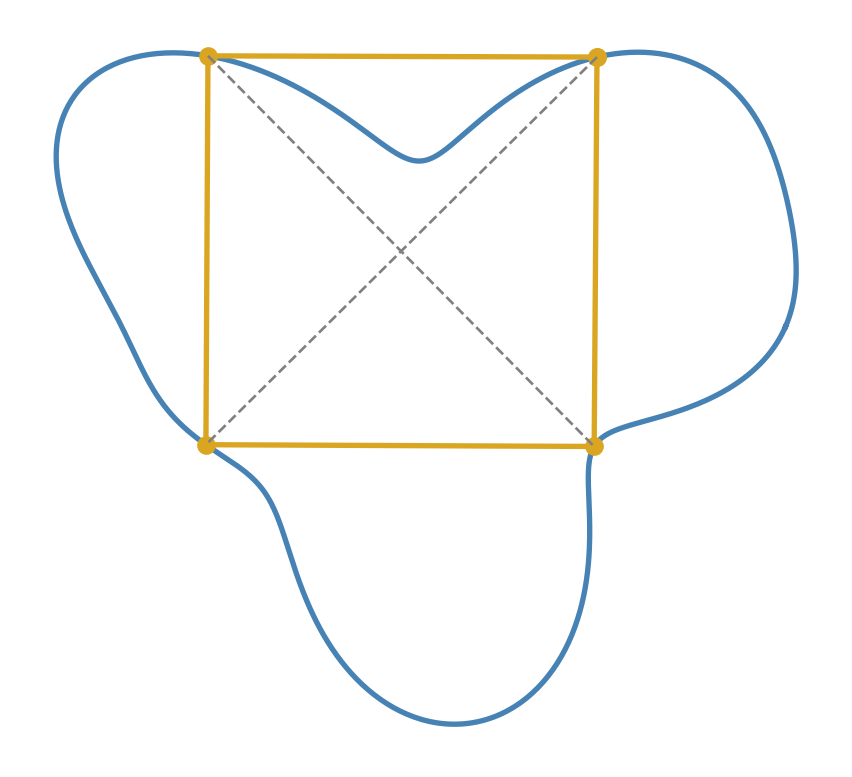

How a Möbius strip and a Klein bottle conspire to prove that every closed loop you can draw contains four points forming a perfect rectangle.
Published
June 10, 2026
“We must know. We shall know.”
— David Hilbert, Königsberg address (1930)
In 1911, Otto Toeplitz asked a question that sounds like it belongs in a children’s puzzle book: if you draw any closed loop on a piece of paper — any loop at all, as long as the pen comes back to where it started without lifting — can you always find four points on it that form a perfect square? [1]
More than a century later, nobody knows. The square peg problem, as it came to be called, is still open in general. Mathematicians have chipped away at special cases for decades — convex curves, smooth curves, curves with mild regularity — but the full question, for an arbitrary continuous loop, has resisted everything thrown at it [2].
Here is the part I find delightful, though. If you relax the question just slightly — ask for an inscribed rectangle instead of a square — the problem snaps open, and the proof, due to Herbert Vaughan [3], is one of the most beautiful arguments I know. It uses a Möbius strip and a Klein bottle. Not as curiosities, not as party tricks for math outreach, but as load-bearing logical machinery. Topology has a reputation as the study of weird shapes — “rubber-sheet geometry,” coffee cups turning into donuts. This proof is the best answer I know to the question “but what is all that for?” The weird shapes show up because they are the honest answer to a concrete question about points on a curve, and their weirdness is precisely what forces the rectangle to exist.
I first met this argument through Grant Sanderson’s wonderful video on the topic [4], and what follows is my attempt to walk through it slowly, in prose, the way I wish someone had walked me through it.
So here is the claim we are going to prove:
Every continuous closed curve in the plane contains four points that form a rectangle.
No smoothness assumed. The curve can have corners, it can wiggle like a coastline. As long as it is a continuous closed loop, a rectangle hides on it. Let’s find it.
Stop looking for rectangles
The first move is the kind of reframing that makes or breaks a hard problem. Searching a curve for “four points forming a rectangle” is miserable: four points means eight coordinates, and the rectangle condition tangles them all together. So let’s ask a different question that turns out to be the same question.
What is a rectangle, really? Picture one, and draw its two diagonals. Notice two things about them: they cut each other exactly in half, and they have the same length. That is not just a property of rectangles — it is a characterization. If two segments share a common midpoint and have equal length, their four endpoints always form a rectangle. (Take a moment to convince yourself: the common midpoint means all four endpoints lie on a circle centered there, with radius half the common length, and the two segments are diameters of that circle. Two diameters of a circle always span a rectangle.)
So the hunt changes shape entirely:
Finding an inscribed rectangle is the same as finding two different pairs of points on the curve that share the same midpoint and the same distance apart.
Read that again, because the whole proof lives here. We no longer care about angles or sides or any rectangle-ness at all. We are looking for a coincidence: two unrelated pairs of points on the loop that happen to agree on two simple measurements. The question “does a rectangle exist?” has become “does a collision exist?”
How do we systematically hunt for a collision? We build a function and ask whether it ever sends two inputs to the same output.
A surface made of measurements
Take your closed loop \(\gamma\), sitting in the \(xy\)-plane. For any pair of points \(A, B\) on the loop, record three numbers:
The first two coordinates locate the midpoint of the pair; the third lifts that midpoint upward, off the page, by the distance between the two points. So every pair of points on the loop gets plotted as a single point floating in 3D space, hovering directly above its own midpoint at a height equal to its length.
I want you to actually picture this. Imagine grabbing two points on the loop and sliding them around continuously. Their midpoint drifts around inside the loop; their separation stretches and shrinks; and the corresponding 3D point glides around smoothly above the plane. As the pair sweeps through all possible configurations, the 3D points sweep out some kind of continuous surface, draped over the interior of the curve like a tent.
Our reframed goal, reframed once more: a rectangle exists exactly when this surface collides with itself — when two genuinely different pairs of points land on the same 3D point. Same first two coordinates means same midpoint; same third coordinate means same distance. A self-intersection of the tent is a rectangle.
Before we go on, notice one special feature of this tent — hang it on the wall now, because it fires later. What happens when the two points of a pair slide together, so that \(A = B\)? The midpoint is just the point itself, and the distance is \(0\). So pairs of coincident points get mapped right down onto the plane, tracing out a copy of the original loop \(\gamma\) at height zero. The rim of the tent is the curve itself, and it is the only part of the surface allowed to touch the ground: any pair of distinct points has positive distance and floats strictly above the plane.
So the picture is this: a continuous surface whose boundary is nailed to the loop in the plane, with its interior held strictly aloft. The question is whether such a surface can avoid passing through itself. To answer that, we need to know what shape the surface is — not its lumps and bumps, which depend on the particular loop, but its intrinsic, topological shape. And that means asking a lovely question: what is the shape of the space of all pairs of points on a loop?
What is the space of pairs of points?
This is where the famous shapes earn their keep. We are going to build, from scratch, the natural geometric object whose points are “pairs of points on a circle.”
Bring the problem down to its skeleton. A closed loop, as far as topology cares, is just a circle: let’s give it an internal coordinate running from \(0\) to \(1\), where \(0\) and \(1\) label the same spot (the loop closes up). A pair of points on the loop is then a pair of numbers \((x, y)\) with \(x, y \in [0,1]\) — which is to say, a point in the unit square.
To make this concrete, the pair “the point \(30\%\) of the way around, together with the point \(70\%\) of the way around” is the point \((0.3, 0.7)\) in the square. Slide either point along the loop and you slide around inside the square. So far, so flat.
But the square is lying to us in two ways, and fixing each lie is what creates the topology.
First lie: the edges. On the loop, coordinate \(0\)is coordinate \(1\). So the point \((0, y)\) of the square and the point \((1, y)\) represent the exact same pair, and honesty demands we glue the left edge to the right edge. Roll the square into a cylinder. The same goes for the top and bottom edges: glue them too, and the cylinder closes up into a torus — the surface of a donut. This is a fact worth savoring on its own: the space of ordered pairs of points on a circle is a torus. Every ordered pair corresponds to exactly one point of the donut’s surface, and sliding the pair of points moves you continuously around it.
Second lie: the ordering. Our function \(f\) doesn’t care which point you call \(A\) and which you call \(B\) — the midpoint of \(\{A, B\}\) is the midpoint of \(\{B, A\}\), and likewise the distance. The pairs we care about are unordered. But the square (and the torus) counts \((0.3, 0.7)\) and \((0.7, 0.3)\) as different points. Geometrically, these duplicates sit at mirror positions across the square’s main diagonal. To stop double-counting, we should fold the square along the diagonal and keep just one triangular half.
Now comes the subtle part, and it is worth slowing down for. After folding, we hold a triangle: the diagonal edge represents pairs of identical points (where \(x = y\)), and the two other edges — the leftovers of the square’s edges — still carry gluing debts from the first lie. Chase carefully which point on one edge must attach to which point on the other (this is exactly the kind of thing best done by drawing arrows on paper, and I encourage you to try), and you discover the gluing only matches up if you attach the two edges with a flip — orientation reversed, like closing a band with a half-twist.
A band glued shut with a half-twist. You might have already guessed: it’s a Möbius strip.
Pause here, because this deserves to be chewed on. The Möbius strip was not chosen. Nobody reached into the cabinet of famous shapes and picked the quirky one. We asked an utterly pedestrian question — what is the set of all unordered pairs of points on a loop? — and followed the gluing rules where they led, and the answer is a Möbius strip, in the same matter-of-fact way that the answer to “what are the whole-number solutions of \(x^2 = 4\)” is \(\pm 2\). The half-twist is the geometric residue of unorderedness. That, to me, is the moment this proof changes what topology is about: these shapes are not exotic specimens, they are the inevitable forms of ordinary configuration spaces.
And note what the strip’s edge is: it is the fold line, the old diagonal \(x = y\) — the pairs of coincident points. The boundary circle of the Möbius strip corresponds exactly to the “pairs” of distance zero. The pistol on the wall is cocked.
The Klein bottle pulls the trigger
Let’s assemble what we have.
The function \(f\) takes an unordered pair of points on the loop and outputs a point in 3D. We now know its domain is a Möbius strip, and \(f\) maps that strip continuously into space, with two hard constraints we established earlier: the strip’s interior (pairs of distinct points) lands strictly above the plane, and the strip’s boundary circle (coincident pairs) lands exactly on the original curve \(\gamma\), down at height zero — tracing around it faithfully, once.
Suppose, for contradiction, that no rectangle exists. Then \(f\) never sends two different pairs to the same output — no collisions — which means \(f\) embeds the Möbius strip into 3D space without any self-intersection. So the supposed counterexample hands us:
A Möbius strip, floating in 3D without passing through itself, its interior strictly above a plane, its boundary circle lying in that plane along a simple closed curve.
Does that sound plausible? Here is the move that kills it, and it is pure elegance. Take this floating strip and reflect it through the plane. The mirror image is another Möbius strip, hanging strictly below the plane, with its boundary circle tracing the same curve \(\gamma\). Now look at the two strips together: an upper surface and a lower surface, meeting precisely along their shared boundary circle. Welded along \(\gamma\), they merge into a single closed surface with no edge at all — a surface built by gluing two Möbius strips together along their boundaries.
Topology has a name for that object. It is the Klein bottle.
And the Klein bottle has one famous, fundamental property: it cannot exist in 3D space without passing through itself. Every picture you have ever seen of a Klein bottle — the bottle whose neck dives through its own side — shows that forced self-intersection. This is a theorem, not a failure of glassblowers’ imagination: a closed surface embedded in \(\mathbb{R}^3\) must have a well-defined inside and outside, hence an orientation, and the Klein bottle is non-orientable — it is, after all, made of Möbius strips, the original one-sided surface. (By the way, this inside/outside fact is the surface cousin of the Jordan curve theorem; intuitive-sounding, surprisingly deep.)
So walk the chain backwards, and feel each link click:
The Klein bottle cannot sit in 3D without self-intersection. Our two-strip surface would be a Klein bottle in 3D — and the mirror trick means a self-crossing anywhere forces one in the upper strip itself.1 So the upper Möbius strip must pass through itself. A self-intersection of the strip is two distinct unordered pairs with the same \(f\)-output. Same output means same midpoint and same distance. And same midpoint plus same distance means: a rectangle.
Every continuous closed loop inscribes a rectangle. \(\blacksquare\)
Doesn’t that just feel beautiful? At no point did we compute anything. We never wrote down the curve, never solved an equation. We simply identified what shape the space of pairs is, noticed that a no-rectangle world would force that shape to do something a Klein bottle is logically incapable of doing, and let the impossibility do all the work. The Möbius strip and the Klein bottle entered the proof not as decoration but as the hypothesis-crushing machinery itself.
A check
The proof guarantees a rectangle exists but is gloriously non-constructive — it points at a collision without telling you where. So let’s go find one numerically. The code below builds a lumpy, asymmetric closed curve, computes the triple (midpoint, distance) for a dense set of point pairs, and hunts for two different pairs whose triples nearly coincide — the self-intersection of our tent, made tangible.
import numpy as npimport matplotlib.pyplot as pltfrom collections import defaultdictdef curve(t):"""A lumpy, asymmetric closed curve, parametrized by t in [0, 1).""" th =2* np.pi * t r =1+0.30* np.sin(3* th) +0.12* np.cos(5* th +1.0)return np.column_stack([r * np.cos(th), 0.85* r * np.sin(th)])N =800P = curve(np.linspace(0, 1, N, endpoint=False))# All pairs: midpoint (x, y) and distance -> a point of the "tent" surfacei, j = np.triu_indices(N, k=5) # skip near-coincident pairsmid =0.5* (P[i] + P[j])dist = np.linalg.norm(P[i] - P[j], axis=1)triple = np.column_stack([mid, dist])# Hash triples into coarse buckets; a bucket holding two pairs with four# distinct endpoints is a candidate collision (i.e., a rectangle).buckets = defaultdict(list)for idx, key inenumerate(map(tuple, np.round(triple /0.02))): buckets[key].append(idx)# Among near-collisions, prefer a "fat" rectangle (large shortest side).best, best_score =None, 0.0for members in buckets.values():for a_pos, a inenumerate(members):for b in members[a_pos +1:]:iflen({i[a], j[a], i[b], j[b]}) ==4\and np.linalg.norm(triple[a] - triple[b]) <0.005: corners = P[[i[a], i[b], j[a], j[b]]] sides = np.linalg.norm( np.diff(np.vstack([corners, corners[:1]]), axis=0), axis=1)if sides.min() > best_score: best, best_score = (a, b), sides.min()a, b = bestquad = P[[i[a], i[b], j[a], j[b]]] # interleave to order the cornerserr = np.linalg.norm(triple[a] - triple[b])print(f"mismatch between the two (midpoint, distance) triples: {err:.4f}")fig, ax = plt.subplots(figsize=(6, 5))ax.plot(*np.vstack([P, P[:1]]).T, lw=2, color="steelblue")ax.plot(*np.vstack([quad, quad[:1]]).T, lw=2, color="goldenrod", marker="o")for k in (a, b): ax.plot(*P[[i[k], j[k]]].T, ls="--", lw=1, color="gray")ax.set_aspect("equal"); ax.axis("off")plt.show()
mismatch between the two (midpoint, distance) triples: 0.0043

Figure 1: A numerically found inscribed rectangle (gold) on a lumpy closed curve, located by searching for two chords (dashed) with matching midpoints and lengths.
The mismatch printed above is the residual error of the collision — with a finer sample it shrinks toward zero, exactly as the theorem says it must. The dashed chords are the two “diagonals”: different pairs of points, same midpoint, same length.
What about the square?
So why doesn’t this argument settle Toeplitz’s original question? Because a square demands one more coincidence. Two pairs with a shared midpoint and equal distance give a rectangle of some aspect ratio — whatever the curve happens to offer. To force a square, the two diagonals must also cross at \(90°\). That extra angle condition adds a dimension to the data: instead of a map into 3D, the natural setting becomes a Möbius strip mapped into four-dimensional space, where self-intersections are no longer forced by any easy parity argument — surfaces in 4D have room to slip past each other, the way curves that must cross in 2D can dodge in 3D.
There has been real movement, though. In 2020, Joshua Greene and Andrew Lobb proved a stunning result: for every smooth closed curve, you can inscribe not just a square but a rectangle of every aspect ratio you like [5]. Their tools come from symplectic geometry — the Möbius strip reappears as a Lagrangian surface in \(\mathbb{C}^2\) — but the spirit is recognizably the same: configuration spaces, forced intersections.
And here the pistol from the wall fires one last time. Why does smoothness matter? Remember the rim of our tent — the limit of pairs of points sliding together. For a smooth curve, that limiting process is tame: as two points merge, the chord between them settles into a definite direction, the tangent line, so the angle data behaves continuously all the way down to the boundary. For a rough curve — picture a fractal coastline, crinkled at every scale — nearby points can sit in wildly fluctuating directions no matter how close they get. There is no tangent, no limiting angle, and the boundary behavior of the relevant configuration space breaks down precisely where the argument needs it most. That is the technical crack through which the general square peg problem still escapes. As of today it remains open for arbitrary continuous curves [2] — a question a child can ask, holding out against a century of professionals.
What to remember
A Möbius strip is not a shape so much as an answer — the inevitable form of the space of unordered pairs of points on a loop, with the half-twist as the geometric cost of forgetting order. And the impossibilities topology catalogs, like the Klein bottle’s refusal to embed in 3D, are not curiosities: they are weapons. Vaughan’s proof wins by maneuvering a hypothetical no-rectangle world into building a Klein bottle in 3D space, then letting the impossibility detonate. When someone asks what the weird shapes are for, this is the answer: they are where honest questions about ordinary configurations were always headed.
How to cite
Terry (2026). The Inscribed Rectangle Problem. Retrieved from https://terryfxh.github.io/math-notes/posts/the-inscribed-rectangle-problem/.
References
[1]
O. Toeplitz, “Über einige aufgaben der analysis situs,”Verhandlungen der Schweizerischen Naturforschenden Gesellschaft in Solothurn, vol. 4, p. 197, 1911.
[2]
B. Matschke, “A survey on the square peg problem,”Notices of the American Mathematical Society, vol. 61, no. 4, pp. 346–352, 2014.
[3]
M. D. Meyerson, “Balancing acts,”Topology Proceedings, vol. 6, pp. 59–75, 1981.
J. E. Greene and A. Lobb, “The rectangular peg problem,”Annals of Mathematics, vol. 194, no. 2, pp. 509–517, 2021.
Footnotes
The two halves can’t collide with each other away from the plane — one is strictly above, one strictly below — and along \(\gamma\) they only meet at the shared rim, since a curve homeomorphic to a circle… well, since the boundary traces \(\gamma\) exactly once. So the self-intersection must already live in the upper strip.↩︎
Source Code
---title: "The Inscribed Rectangle Problem"description: "How a Möbius strip and a Klein bottle conspire to prove that every closed loop you can draw contains four points forming a perfect rectangle."date: 2026-06-10categories: [pure, topology]bibliography: ../../references.bibdraft: false---::: {.epigraph}*"We must know. We shall know."*[— David Hilbert, Königsberg address (1930)]{.attribution}:::In 1911, Otto Toeplitz asked a question that sounds like it belongs in a children's puzzle book: if you draw any closed loop on a piece of paper — any loop at all, as long as the pen comes back to where it started without lifting — can you always find four points on it that form a perfect square? [@toeplitz1911]More than a century later, nobody knows. The *square peg problem*, as it came to be called, is still open in general. Mathematicians have chipped away at special cases for decades — convex curves, smooth curves, curves with mild regularity — but the full question, for an arbitrary continuous loop, has resisted everything thrown at it [@matschke2014survey].Here is the part I find delightful, though. If you relax the question just slightly — ask for an inscribed *rectangle* instead of a square — the problem snaps open, and the proof, due to Herbert Vaughan [@meyerson1981balancing], is one of the most beautiful arguments I know. It uses a Möbius strip and a Klein bottle. Not as curiosities, not as party tricks for math outreach, but as *load-bearing logical machinery*. Topology has a reputation as the study of weird shapes — "rubber-sheet geometry," coffee cups turning into donuts. This proof is the best answer I know to the question "but what is all that *for*?" The weird shapes show up because they are the honest answer to a concrete question about points on a curve, and their weirdness is precisely what forces the rectangle to exist.I first met this argument through Grant Sanderson's wonderful video on the topic [@sanderson2016topology], and what follows is my attempt to walk through it slowly, in prose, the way I wish someone had walked me through it.So here is the claim we are going to prove:> **Every continuous closed curve in the plane contains four points that form a rectangle.**No smoothness assumed. The curve can have corners, it can wiggle like a coastline. As long as it is a continuous closed loop, a rectangle hides on it. Let's find it.## Stop looking for rectanglesThe first move is the kind of reframing that makes or breaks a hard problem. Searching a curve for "four points forming a rectangle" is miserable: four points means eight coordinates, and the rectangle condition tangles them all together. So let's ask a different question that turns out to be the same question.What is a rectangle, really? Picture one, and draw its two diagonals. Notice two things about them: they cut each other exactly in half, and they have the same length. That is not just a property of rectangles — it is a *characterization*. If two segments share a common midpoint and have equal length, their four endpoints always form a rectangle. (Take a moment to convince yourself: the common midpoint means all four endpoints lie on a circle centered there, with radius half the common length, and the two segments are diameters of that circle. Two diameters of a circle always span a rectangle.)So the hunt changes shape entirely:> Finding an inscribed rectangle is the same as finding **two different pairs of points** on the curve that share the **same midpoint** and the **same distance** apart.Read that again, because the whole proof lives here. We no longer care about angles or sides or any rectangle-ness at all. We are looking for a *coincidence*: two unrelated pairs of points on the loop that happen to agree on two simple measurements. The question "does a rectangle exist?" has become "does a collision exist?"How do we systematically hunt for a collision? We build a function and ask whether it ever sends two inputs to the same output.## A surface made of measurementsTake your closed loop $\gamma$, sitting in the $xy$-plane. For any pair of points $A, B$ on the loop, record three numbers:$$f(A, B) \;=\; \Big(\underbrace{\tfrac{A_x + B_x}{2}}_{\text{midpoint } x}, \;\underbrace{\tfrac{A_y + B_y}{2}}_{\text{midpoint } y}, \;\underbrace{\|A - B\|}_{\text{distance}}\Big).$$The first two coordinates locate the midpoint of the pair; the third lifts that midpoint *upward*, off the page, by the distance between the two points. So every pair of points on the loop gets plotted as a single point floating in 3D space, hovering directly above its own midpoint at a height equal to its length.I want you to actually picture this. Imagine grabbing two points on the loop and sliding them around continuously. Their midpoint drifts around inside the loop; their separation stretches and shrinks; and the corresponding 3D point glides around smoothly above the plane. As the pair sweeps through *all* possible configurations, the 3D points sweep out some kind of continuous surface, draped over the interior of the curve like a tent.Our reframed goal, reframed once more: a rectangle exists exactly when this surface **collides with itself** — when two genuinely different pairs of points land on the *same* 3D point. Same first two coordinates means same midpoint; same third coordinate means same distance. A self-intersection of the tent *is* a rectangle.Before we go on, notice one special feature of this tent — hang it on the wall now, because it fires later. What happens when the two points of a pair slide together, so that $A = B$? The midpoint is just the point itself, and the distance is $0$. So pairs of *coincident* points get mapped right down onto the plane, tracing out a copy of the original loop $\gamma$ at height zero. The rim of the tent is the curve itself, and it is the **only** part of the surface allowed to touch the ground: any pair of distinct points has positive distance and floats strictly above the plane.So the picture is this: a continuous surface whose boundary is nailed to the loop in the plane, with its interior held strictly aloft. The question is whether such a surface can avoid passing through itself. To answer that, we need to know what shape the surface is — not its lumps and bumps, which depend on the particular loop, but its intrinsic, topological shape. And that means asking a lovely question: *what is the shape of the space of all pairs of points on a loop?*## What is the space of pairs of points?This is where the famous shapes earn their keep. We are going to build, from scratch, the natural geometric object whose points are "pairs of points on a circle."Bring the problem down to its skeleton. A closed loop, as far as topology cares, is just a circle: let's give it an internal coordinate running from $0$ to $1$, where $0$ and $1$ label the same spot (the loop closes up). A pair of points on the loop is then a pair of numbers $(x, y)$ with $x, y \in [0,1]$ — which is to say, a point in the **unit square**.To make this concrete, the pair "the point $30\%$ of the way around, together with the point $70\%$ of the way around" is the point $(0.3, 0.7)$ in the square. Slide either point along the loop and you slide around inside the square. So far, so flat.But the square is lying to us in two ways, and fixing each lie is what creates the topology.**First lie: the edges.** On the loop, coordinate $0$ *is* coordinate $1$. So the point $(0, y)$ of the square and the point $(1, y)$ represent the exact same pair, and honesty demands we **glue the left edge to the right edge**. Roll the square into a cylinder. The same goes for the top and bottom edges: glue them too, and the cylinder closes up into a **torus** — the surface of a donut. This is a fact worth savoring on its own: *the space of ordered pairs of points on a circle is a torus.* Every ordered pair corresponds to exactly one point of the donut's surface, and sliding the pair of points moves you continuously around it.**Second lie: the ordering.** Our function $f$ doesn't care which point you call $A$ and which you call $B$ — the midpoint of $\{A, B\}$ is the midpoint of $\{B, A\}$, and likewise the distance. The pairs we care about are *unordered*. But the square (and the torus) counts $(0.3, 0.7)$ and $(0.7, 0.3)$ as different points. Geometrically, these duplicates sit at mirror positions across the square's main diagonal. To stop double-counting, we should **fold the square along the diagonal** and keep just one triangular half.Now comes the subtle part, and it is worth slowing down for. After folding, we hold a triangle: the diagonal edge represents pairs of *identical* points (where $x = y$), and the two other edges — the leftovers of the square's edges — still carry gluing debts from the first lie. Chase carefully which point on one edge must attach to which point on the other (this is exactly the kind of thing best done by drawing arrows on paper, and I encourage you to try), and you discover the gluing only matches up if you attach the two edges *with a flip* — orientation reversed, like closing a band with a half-twist.A band glued shut with a half-twist. You might have already guessed: it's a **Möbius strip**.Pause here, because this deserves to be chewed on. The Möbius strip was not chosen. Nobody reached into the cabinet of famous shapes and picked the quirky one. We asked an utterly pedestrian question — *what is the set of all unordered pairs of points on a loop?* — and followed the gluing rules where they led, and the answer **is** a Möbius strip, in the same matter-of-fact way that the answer to "what are the whole-number solutions of $x^2 = 4$" is $\pm 2$. The half-twist is the geometric residue of unorderedness. That, to me, is the moment this proof changes what topology is *about*: these shapes are not exotic specimens, they are the inevitable forms of ordinary configuration spaces.And note what the strip's **edge** is: it is the fold line, the old diagonal $x = y$ — the pairs of coincident points. The boundary circle of the Möbius strip corresponds exactly to the "pairs" of distance zero. The pistol on the wall is cocked.## The Klein bottle pulls the triggerLet's assemble what we have.The function $f$ takes an unordered pair of points on the loop and outputs a point in 3D. We now know its domain is a Möbius strip, and $f$ maps that strip continuously into space, with two hard constraints we established earlier: the strip's interior (pairs of distinct points) lands *strictly above* the plane, and the strip's boundary circle (coincident pairs) lands *exactly on* the original curve $\gamma$, down at height zero — tracing around it faithfully, once.Suppose, for contradiction, that no rectangle exists. Then $f$ never sends two different pairs to the same output — no collisions — which means $f$ embeds the Möbius strip into 3D space without any self-intersection. So the supposed counterexample hands us:> A Möbius strip, floating in 3D without passing through itself, its interior strictly above a plane, its boundary circle lying in that plane along a simple closed curve.Does that sound plausible? Here is the move that kills it, and it is pure elegance. Take this floating strip and **reflect it through the plane**. The mirror image is another Möbius strip, hanging strictly *below* the plane, with its boundary circle tracing the *same* curve $\gamma$. Now look at the two strips together: an upper surface and a lower surface, meeting precisely along their shared boundary circle. Welded along $\gamma$, they merge into a single closed surface with no edge at all — a surface built by **gluing two Möbius strips together along their boundaries**.Topology has a name for that object. It is the **Klein bottle**.And the Klein bottle has one famous, fundamental property: it **cannot exist in 3D space without passing through itself**. Every picture you have ever seen of a Klein bottle — the bottle whose neck dives through its own side — shows that forced self-intersection. This is a theorem, not a failure of glassblowers' imagination: a closed surface embedded in $\mathbb{R}^3$ must have a well-defined inside and outside, hence an orientation, and the Klein bottle is non-orientable — it is, after all, made of Möbius strips, the original one-sided surface. (By the way, this inside/outside fact is the surface cousin of the Jordan curve theorem; intuitive-sounding, surprisingly deep.)So walk the chain backwards, and feel each link click:The Klein bottle cannot sit in 3D without self-intersection. Our two-strip surface would *be* a Klein bottle in 3D — and the mirror trick means a self-crossing anywhere forces one in the upper strip itself.^[The two halves can't collide with *each other* away from the plane — one is strictly above, one strictly below — and along $\gamma$ they only meet at the shared rim, since a curve homeomorphic to a circle... well, since the boundary traces $\gamma$ exactly once. So the self-intersection must already live in the upper strip.] So the upper Möbius strip must pass through itself. A self-intersection of the strip is two distinct unordered pairs with the same $f$-output. Same output means same midpoint and same distance. And same midpoint plus same distance means: **a rectangle**.Every continuous closed loop inscribes a rectangle. $\blacksquare$Doesn't that just feel beautiful? At no point did we compute anything. We never wrote down the curve, never solved an equation. We simply identified what shape the space of pairs *is*, noticed that a no-rectangle world would force that shape to do something a Klein bottle is logically incapable of doing, and let the impossibility do all the work. The Möbius strip and the Klein bottle entered the proof not as decoration but as the hypothesis-crushing machinery itself.## A checkThe proof guarantees a rectangle exists but is gloriously non-constructive — it points at a collision without telling you where. So let's go find one numerically. The code below builds a lumpy, asymmetric closed curve, computes the triple (midpoint, distance) for a dense set of point pairs, and hunts for two different pairs whose triples nearly coincide — the self-intersection of our tent, made tangible.```{python}#| label: fig-rectangle#| fig-cap: "A numerically found inscribed rectangle (gold) on a lumpy closed curve, located by searching for two chords (dashed) with matching midpoints and lengths."import numpy as npimport matplotlib.pyplot as pltfrom collections import defaultdictdef curve(t):"""A lumpy, asymmetric closed curve, parametrized by t in [0, 1).""" th =2* np.pi * t r =1+0.30* np.sin(3* th) +0.12* np.cos(5* th +1.0)return np.column_stack([r * np.cos(th), 0.85* r * np.sin(th)])N =800P = curve(np.linspace(0, 1, N, endpoint=False))# All pairs: midpoint (x, y) and distance -> a point of the "tent" surfacei, j = np.triu_indices(N, k=5) # skip near-coincident pairsmid =0.5* (P[i] + P[j])dist = np.linalg.norm(P[i] - P[j], axis=1)triple = np.column_stack([mid, dist])# Hash triples into coarse buckets; a bucket holding two pairs with four# distinct endpoints is a candidate collision (i.e., a rectangle).buckets = defaultdict(list)for idx, key inenumerate(map(tuple, np.round(triple /0.02))): buckets[key].append(idx)# Among near-collisions, prefer a "fat" rectangle (large shortest side).best, best_score =None, 0.0for members in buckets.values():for a_pos, a inenumerate(members):for b in members[a_pos +1:]:iflen({i[a], j[a], i[b], j[b]}) ==4\and np.linalg.norm(triple[a] - triple[b]) <0.005: corners = P[[i[a], i[b], j[a], j[b]]] sides = np.linalg.norm( np.diff(np.vstack([corners, corners[:1]]), axis=0), axis=1)if sides.min() > best_score: best, best_score = (a, b), sides.min()a, b = bestquad = P[[i[a], i[b], j[a], j[b]]] # interleave to order the cornerserr = np.linalg.norm(triple[a] - triple[b])print(f"mismatch between the two (midpoint, distance) triples: {err:.4f}")fig, ax = plt.subplots(figsize=(6, 5))ax.plot(*np.vstack([P, P[:1]]).T, lw=2, color="steelblue")ax.plot(*np.vstack([quad, quad[:1]]).T, lw=2, color="goldenrod", marker="o")for k in (a, b): ax.plot(*P[[i[k], j[k]]].T, ls="--", lw=1, color="gray")ax.set_aspect("equal"); ax.axis("off")plt.show()```The mismatch printed above is the residual error of the collision — with a finer sample it shrinks toward zero, exactly as the theorem says it must. The dashed chords are the two "diagonals": different pairs of points, same midpoint, same length.## What about the square?So why doesn't this argument settle Toeplitz's original question? Because a square demands one more coincidence. Two pairs with a shared midpoint and equal distance give a rectangle of *some* aspect ratio — whatever the curve happens to offer. To force a square, the two diagonals must also cross at $90°$. That extra angle condition adds a dimension to the data: instead of a map into 3D, the natural setting becomes a Möbius strip mapped into **four**-dimensional space, where self-intersections are no longer forced by any easy parity argument — surfaces in 4D have room to slip past each other, the way curves that must cross in 2D can dodge in 3D.There has been real movement, though. In 2020, Joshua Greene and Andrew Lobb proved a stunning result: for every **smooth** closed curve, you can inscribe not just a square but a rectangle of *every* aspect ratio you like [@greene2021rectangular]. Their tools come from symplectic geometry — the Möbius strip reappears as a Lagrangian surface in $\mathbb{C}^2$ — but the spirit is recognizably the same: configuration spaces, forced intersections.And here the pistol from the wall fires one last time. Why does smoothness matter? Remember the rim of our tent — the limit of pairs of points sliding together. For a smooth curve, that limiting process is tame: as two points merge, the chord between them settles into a definite direction, the tangent line, so the angle data behaves continuously all the way down to the boundary. For a rough curve — picture a fractal coastline, crinkled at every scale — nearby points can sit in wildly fluctuating directions no matter how close they get. There is no tangent, no limiting angle, and the boundary behavior of the relevant configuration space breaks down precisely where the argument needs it most. That is the technical crack through which the general square peg problem still escapes. As of today it remains open for arbitrary continuous curves [@matschke2014survey] — a question a child can ask, holding out against a century of professionals.## What to rememberA Möbius strip is not a shape so much as an *answer* — the inevitable form of the space of unordered pairs of points on a loop, with the half-twist as the geometric cost of forgetting order. And the impossibilities topology catalogs, like the Klein bottle's refusal to embed in 3D, are not curiosities: they are weapons. Vaughan's proof wins by maneuvering a hypothetical no-rectangle world into building a Klein bottle in 3D space, then letting the impossibility detonate. When someone asks what the weird shapes are for, this is the answer: they are where honest questions about ordinary configurations were always headed.## How to cite> Terry (2026). *The Inscribed Rectangle Problem*. Retrieved from `https://terryfxh.github.io/math-notes/posts/the-inscribed-rectangle-problem/`.